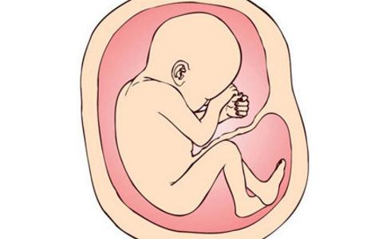

事情发生在1987年，主人公是台湾屏东县的林美惠女士。她婚后生了二女，再怀第三、第四胎时，因为害怕又生女儿，就和丈夫商量把胎儿拿掉。当时虽然未信佛，但内心仍抹不去一份愧疚和难过。
到了十一月，她又怀孕，虽然他们家很希望生个男孩，矛盾的是害怕又生女儿。当时她上班很忙，暂时不想生孩子，就和丈夫商量，决定把胎儿拿掉，并跟丈夫说好，等他有空，就去妇产科拿掉胎儿。
做这个决定的当晚，她不知不觉做了一个梦，不同于以往模糊的梦，而是很清晰的梦。在梦中，她看到一尊雕像的观世音菩萨，穿着白衣，非常庄严，接着天空放出一望无际白色的大光明，面对这个境界她非常欢喜。这时耳边忽然响起小孩的声音：“妈妈！求求你留下我好不好？”声音很细柔、很好听，可是她无心去欣赏这样好听的声音，脱口就说：“不行啦，万一又是女儿怎么办？”小孩继续求着：“妈妈！求求你留下我好不好？我会很乖很乖的啦。”她仍然拒绝：“不行啦，万一又生到女儿怎么办？”结果声音消失，她就醒过来了。
当时她不信佛，也不在意这个梦兆，仍旧照常上班下班。奇怪的是，晚上又做了同样的梦，只是观世音菩萨不再显现，直接望见一望无际非常漂亮的大光明，随后又响起轻柔的声音：“妈妈！求求您留下我好不好，我会很乖很乖的啦。”非常诚恳的乞求，但她依然拒绝：“不行啦，万一又是个女儿怎么办？”相同的梦境大约持续七天左右，小孩总是在请求得不到回应后，消失于梦中。当时梦中清楚地觉得是两个人在对话，但又感觉好像自言自语似的。
第七天晚上梦中，小孩又来了，仍然很诚恳地祈求留下她，而且是不断反复请求，林美惠也是反复地拒绝，最后一次小孩说：“妈妈！求求你留下我，我会很乖很乖的啦，我跟两个姐姐不一样喔！”说完之后，不等林美惠回答，小孩就不再理她，直接消失于梦中，她也随即醒来。
林美惠做梦之后，就和丈夫商量，考虑到这次梦境很特别，连续一个礼拜小孩一直这样祈求，而且还说和两个姐姐不一样，他们认为应该是个男孩，就决定把孩子留下。后来生下来是个女孩，孩子从小和佛菩萨有缘，对三宝有信心，幼小的心灵就知道慈爱众生。在她三岁那年，农历除夕在婆婆家过年时，婆婆忙着杀鸡，她把小脸挨过去问婆婆干什么，婆婆说：“我在杀鸡，拜过之后，挑最大的鸡腿给你吃。”孩子听了竟然板起面孔，一只小手叉着腰，大声说：“你们杀鸡鸡，以后鸡鸡就找你们算帐。”在她四岁那年，一次母亲为她洗澡，她突然说：“妈妈你出家，要带我一起出家！我不像两个姐姐要嫁给别人。”这就是她和两个姐姐不一样的地方。
将心比心地想一想，如果是胎儿，我在母亲腹中最希望什么？最希望母亲孕育我，使我有做人的机会，我不希望她剥夺我作人的权利。以佛法来说，多劫以来轮转恶道，多么希望生在人间，如果能得人身，发展智慧和慈悲以成就生命的大义，我该多么感谢母亲！所以使我成人是对我最大的恩德。如果母亲把我扼杀胎中，那想作人也没有机会，不作人在三恶趣中辗转堕落，那将多么惨痛。这样为胎儿着想后，确实应尽力给他作人的机会。
有一位台湾东海大学毕业的李丽慧居士，一次她到医院妇产科作产前检查，医生由超音波看出，她的肠子全部都胀大了，而且腹内积有很多腹水，整个腹部胀大，医生判断胎儿先天不正常，是个畸形儿，建议她堕胎。根据妇产科医生的诊断，胎死腹中的可能性很大，而且以当时腹部胀大，看起来即使是胎死腹中，也无法从阴道自然生产，必须要剖腹产。在这种情况下，李居士没有丝毫迟疑，她马上就说：“即使胎死腹中，需要剖腹来产出一个死胎，我也愿意，我绝对不杀死我的小孩。”因为她曾经受过五戒，以她坚持要守这条不杀生戒的强烈愿心，以及作为一个母亲的爱心，支持她突破这个困难的障碍。当时发现胎儿畸形时，她去拜见广化老法师，法师坚决地告诉她：“好不容易得到人身，怎么能伤害他呢？只要还没有生下来，一切都可以转变，给它取名叫进成，成功的成，一定要它成功生下来。”而且法师为胎儿作了胎内皈依，又介绍她去拜访道源老和尚，老和尚也很坚定地为孩子取名为平安。
李居士为胎儿作皈依后，每天受持《观世音菩萨普门品》，持念观世音菩萨名号一万声，她以虔诚的信仰坚定地念观世音菩萨，终于平安地生下了“成平安”。一直到她生产之后，医生都还不敢说孩子是正常的，还一直为他作各种检查，但是检查到最后，证实孩子是正常的。所以，观世音菩萨大慈大悲，让这样的难产儿平安生产。近代印光大师在文钞中，再再慈悲教导妇女，临产时要出声念“观世音菩萨”，保证不会有痛苦难产之事。 通过以上事例，我们体会到以善恶业所描绘的景象截然不同，当一位母亲决定宁可剖腹产也决不摧残生命时，我们会被她爱护生命的崇高品格深受感动，以她的善良、以她为成全孩子甘愿受苦的德性，终于使因缘变得吉祥、美好。相反，一位母亲只图自己方便，随意扼杀胎儿时，她变成一个刽子手，失去了母亲的人格，以及使自己成长的最好机会，未来要背上杀子的沉重业债，备受良心的谴责。所以天下的母亲们，在人命攸关之时，是想作罗刹，还是想作菩萨呢？在业的取舍上不能草率，一失足即成千古恨。
以前有位猎人射中一只母猴，母猴知道自己快死，就忍着中箭的痛苦，摘下树叶，努力挤出最后一滴奶水，存在树叶当中，设法留给孩子吃。又有一只母熊，被猎人打中要害，竟然还能端坐不动，没有倒身在地。猎人感到奇怪，上前去看，原来母熊已死，还紧紧抱着一块大石头。为什么呢？因为熊子在石头下的溪水里玩水，母熊怕石头掉下去打中小熊，所以自死也坚忍抱石不放，这种不可思议的母爱感动了猎人，从此他不再猎杀生命。连旁生都能慈悲地爱护自子，作为万物之灵的人类，难道就不能以伟大的胸怀无私地孕育生命吗？